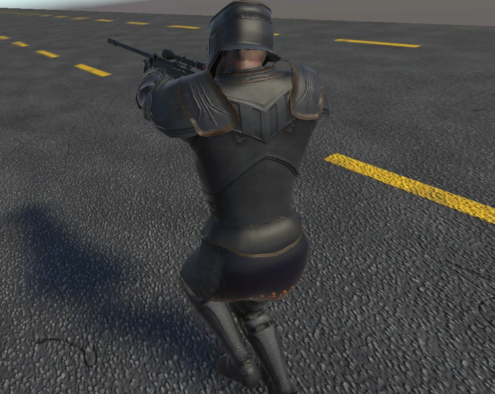
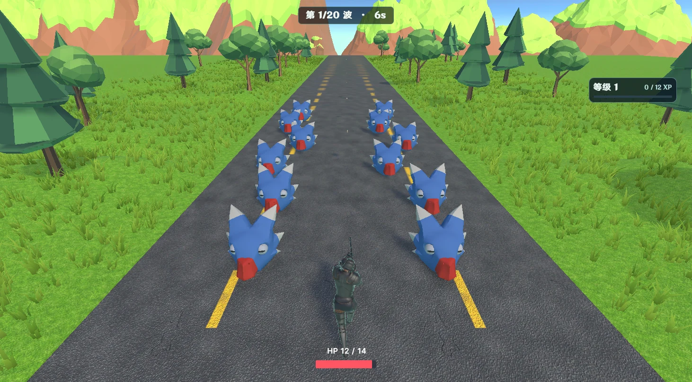
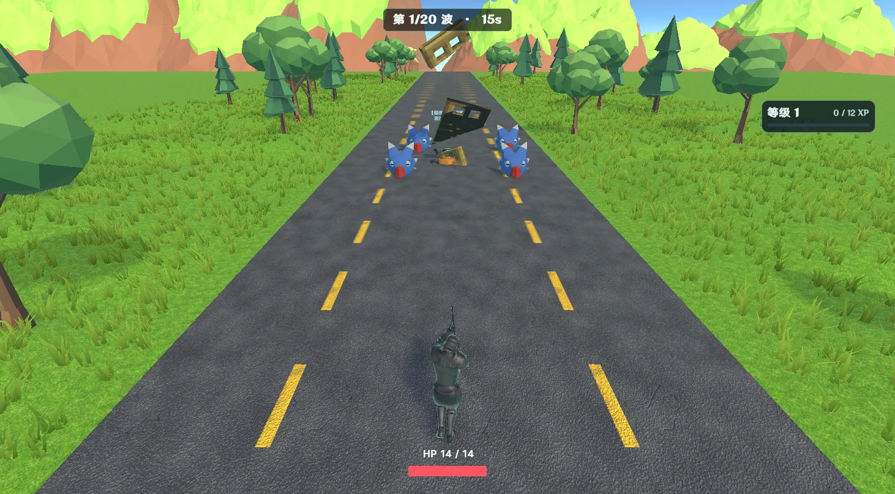

操控与战斗
Unity Input System 处理横移。自动射击使用弹体对象池，命中时统一结算伤害、击退和道具效果。

WEBGL DEMO
A D 横向移动 · 自动射击

加载完成后，在游戏菜单选择「单人游戏」。
局域网合作和结算竞技场由桌面版提供。了解联机方式

横移会同时改变射击路线和拾取位置。躲开威胁、击破奖励门和接住经验晶体，都需要在同一条路上做决定。
课程项目的开发记录涵盖系统实现、专题分析和可复现的回归验证。
Unity Input System 处理横移。自动射击使用弹体对象池，命中时统一结算伤害、击退和道具效果。
五类常规敌人按波次和权重投放。第 10、15、20 波安排首领，攻击前摇、预警与晚期增援推动换位。
ScriptableObject 配置品质、权重和叠层上限。奖励门、经验掉落和三选一升级共同驱动局内构筑。
减速弹和主动脉冲各自计时，闪电按有效目标弹射。专题工作还复盘了元素组合方案，验证中毒表现挂载与回收。
使用 URP 搭建滚动公路，Cinemachine 负责跟拍与传奇拾取演出，UI Toolkit 提供状态提示。射击、受击和拾取使用独立的事件音效。
桌面端由房主结算敌人、命中与掉落，客户端预测横移。进入竞技场时，通过快照恢复本局道具和成长。
根据自动跑局的数据调整中后期压力、奖励上限和首领出手节奏。独立回归覆盖攻击与动画事件时序。
项目使用 Unity 2022 LTS 与 C# 开发，提供桌面端和 WebGL 构建。本页把实际游戏和开发记录放在同一个入口。
同一局域网内，在桌面版创建房间，其他玩家填写房主的局域网 IPv4 地址。默认房间端口为 UDP 7778，队友到齐后由房主开启合作。
浏览器可以主动连接 WebSocket 房主。当前桌面房间使用 Unity Transport 的 UDP 直连；要让网页玩家加入，需要支持 WebSocket 的原生房主和匹配的网页客户端。本站 WebGL 包提供单人试玩。